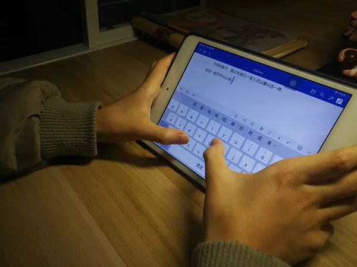

泪目，武汉金银潭医院北三病区收到了一封特殊来信！
原文链接 备份链接 感觉他长大了，希望他会理解我的行为，也希望我的行为能引发他对未来的思考，学习是为了什么，将来想要成为怎样的人。 记者 | 应 琛 “过年前夕，武汉爆发了‘新型冠状病毒’，妈妈爸爸在讨论之后决定过年不出去旅游了，我表示很 …
澎湃新闻记者 李文姬

曹宇泽给“抗疫”一线的爸爸写信 本文图均为 受访者供图
曹宇泽今年11岁，是名小学六年级的学生。他的爸爸曹志刚是三峡大学附属仁和医院急诊重症医学科主任。
疫情来袭，曹志刚第一批报了名，成为医院专家救治组成员，来到发热门诊接诊病人。从那一天起，他便没了白天黑夜之分。会诊电话常常在半夜打来，曹志刚必须保持绝对清醒，认真进行研判。
“晚上睡觉都不敢睡的太熟了。”曹志刚告诉澎湃新闻记者。
而另一方面，急诊科是疫情高风险科室，承担着院前急救任务和周边地区发热病人的转运任务。作为急诊科负责人，曹志刚还要主持着本科室的日常管理工作。
“我上过发热门诊，转运病人我去，兄弟姐妹们少一次接触就少一份风险。最大限度保护好自己，做好打持久战的准备。”为了减少感染风险，他和科室的两名年轻同事一起承担了全部发热病人的接送和转运任务。

曹志刚身着防护装备
得知爸爸在抗击疫情一线，小小的曹宇泽满心的思念和担忧，“爸爸，在这病毒肆虐，人心惶惶的时期，您不怕死吗？”同时，他对爸爸的崇拜也翻了倍。
“虽然没有亲眼看您穿防护服的样子，但我知道那一定是人们常说的‘天使’的样子。”在妈妈的鼓励下，曹宇泽把对爸爸的爱与敬汇成了一封长信。
看着儿子的信，曹志刚心里既温暖又愧疚。“这是给我的最高奖励，心里暖暖的，等着打完怪兽，一定回来陪你吃鸡……”他在朋友圈写下这样一段话，算是给儿子的回信。
2月14日，根据新冠肺炎疫情防控工作需要，曹志刚作为市级专家组成员前往当阳市，参与当地医院收治新冠肺炎病例的临床诊断、医疗救治，以及技术指导。而这一去，还不知要多久归来。
“我陪伴孩子的时间实在是太少了，真的是要感谢家人对我的工作无限的支持，他们的支持就是我最大的动力。”曹志刚对记者说道。

曹志刚和儿子曹宇泽
信件全文如下：
**
亲爱的爸爸：**
您现在一定还在抢救病人吧？您肯定很累了！所以我和妈妈不敢跟您视频，怕打扰您。但我实在想您，因此，偷偷给您写一封信。
今年的除夕，我以为我们一家人可以像以往一样，坐在一起开开心心地吃团年饭，但意想不到的是您却缺席了。
那天下午，您匆匆的收拾了几样换洗用品，对我们说：“我今晚要去发热门诊值班了，这几天不回来了。”您走的那么从容，我突然看到了妈妈眼中闪烁的泪花。可她什么也没说，什么也没问。再次见到您就是四天以后，那天您一进家门，满脸的疲惫，我突然被你脸上几条紫红色的印记惊到了，您告诉我那是长时间戴护目镜和口罩留下的。您为了节约防护服，一穿一戴就是十个小时，您不敢喝水，不敢上厕所，就是为了给后面的人节约一套防护服。我和妈妈满是心疼。我虽然没有亲眼看您穿防护服的样子，但我知道那一定是人们常说的“天使”的样子。
此后的每天，不管是白天还是深夜，那熟悉的电话铃声总会时时想起，那是病人和同事们的召唤，您每次走的都那么坚决，我曾问您：“爸爸，在这病毒肆虐，人心惶惶的时期，您不怕死吗？”您说：“怕呀，但是看着那些神情痛苦、奄奄一息的病人，我就不怕了，因为我是一名医生。”您的话我虽然不是很懂，但我觉得您像一位勇敢的战士！我为您骄傲！
爸爸，我很想对您说：您辛苦了！您已经很久没有睡过一个安稳觉了，您在照顾病人的同时，一定要记得多喝水，多吃点饭，一定要保重身体！我和妈妈等您凯旋归来！
从您身上，我学到了什么是担当，什么是责任。我也明白了我的责任是什么，我一定要好好学习，将来成为一个像您一样对社会有用的人。爸爸，您是我的骄傲！
爱您的儿子：曹宇泽
2020年2月10日
本期编辑 邢潭
推荐阅读


原文链接 备份链接 感觉他长大了，希望他会理解我的行为，也希望我的行为能引发他对未来的思考，学习是为了什么，将来想要成为怎样的人。 记者 | 应 琛 “过年前夕，武汉爆发了‘新型冠状病毒’，妈妈爸爸在讨论之后决定过年不出去旅游了，我表示很 …
原文链接 备份链接 *************▲************* 2020年1月28日，武汉协和医院感染科病房。 （新华社/图） 全文共5066字，阅读大约需要7分钟。 从那时起，护士们戴的不再是常规的护士帽，换成了另一种蓝 …
原文链接 备份链接 一些医护人员和他们子女的故事。 文 | 林少娟 编辑 | 沈小山 他们是驰援湖北的医护人员： 2月7日中午，中山大学附属第一医院举行驰援武汉医疗总队成立出发仪式，再派131名精兵强将组成“特战队”驰援武汉，医疗队将支 …
原文链接 备份链接 “招呼好乐乐、可可。”登机后，晓阳立即给男友林峰发了微信，不放心他们一起养的两只宠物，其实是更不放心男友。 “你才要照顾好自己。” “要登机了吗？” “那俩小的你不用担心。” “一落地记得给我打个电话。” 男友光速回 …
原文链接 备份链接 从医17年， 作为武汉三甲医院急救中心医生的李春觉得自己“从来没有这么无助过”。 图 | 视觉中国 他在临床接触过各种各样高传染性的疾病，从没怕过。但当他得知自己被确诊为新型冠状病毒感染的肺炎，并随后传染给妻子、两个 …